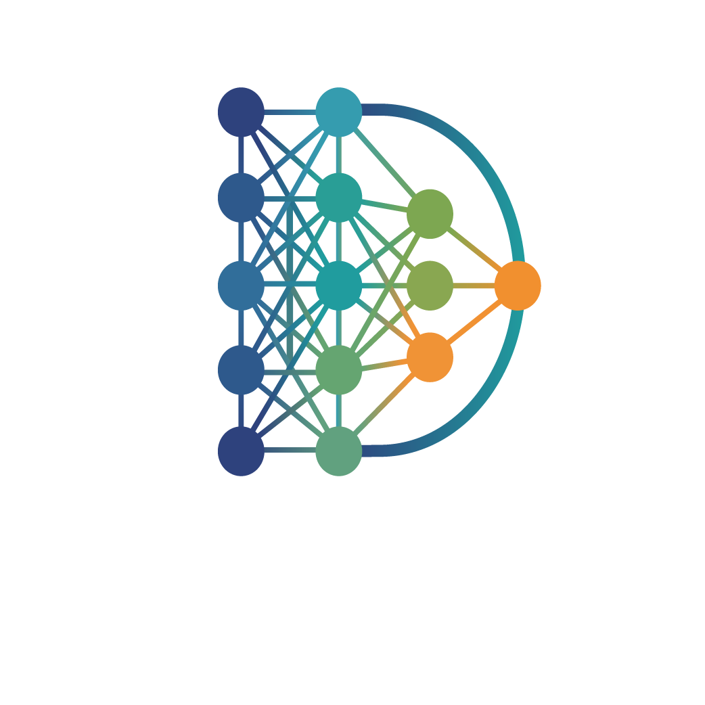

DeepDraft.ai synthesizes deep research with AI precision — purpose-built for Finance, Marketing, and Trend Intelligence at enterprise scale.

// DOMAIN_MODULES
Pre-trained domain modules fine-tuned on industry-specific corpora for signal-rich output.
Resilient architectures for non-linear risk. Move beyond Gaussian assumptions with Heston-driven volatility modeling and Bayesian portfolio optimization.
Scientific attribution for true incrementality. Isolate causal impact and predict lifetime value using Double Machine Learning and survival ensembles.
Causal observability for complex systems. Utilize Neural ODEs and N-BEATS to detect structural drift and anticipate failures before they materialize.
// DEPLOYMENT_MODES
Deploy intelligence your way — integrate directly into your stack or use our visual interface.
The Speed of the Frontier.
Programmatic access to all DeepDraft intelligence modules. REST, WebSocket streaming, and Python SDK. Designed for production-grade integration.
Managed Infrastructure: Zero-ops deployment. We handle the 2026-standard compute orchestration so you can focus on the logic.
Global Latency: Edge-optimized endpoints for real-time inference in finance and telemetry.
Rapid Integration: Connect your data streams via our high-performance Python SDK in under five minutes.
Always Current: Instant access to our latest research derivatives, including Causal Discovery and State Space Models.
The Sovereignty of the Enterprise.
A visual intelligence workspace. Build research pipelines, monitor signals, generate reports, and collaborate — no code required.
VPC Deployment: Run the entire DeepDraft stack within your private cloud. Your data never leaves your perimeter.
Air-Gapped Ready: Full support for high-security environments requiring local model training and execution.
Custom Fine-Tuning: Leverage your proprietary datasets to fine-tune DeepDraft blueprints without external exposure.
Fixed-Cost Licensing: Predictable annual budgeting without the variability of usage-based API billing.
// QUICKSTART
// BETA_ACCESS
Join the DeepDraft beta and be among the first to deploy production intelligence infrastructure.
No spam. Unsubscribe anytime. Beta slots limited.